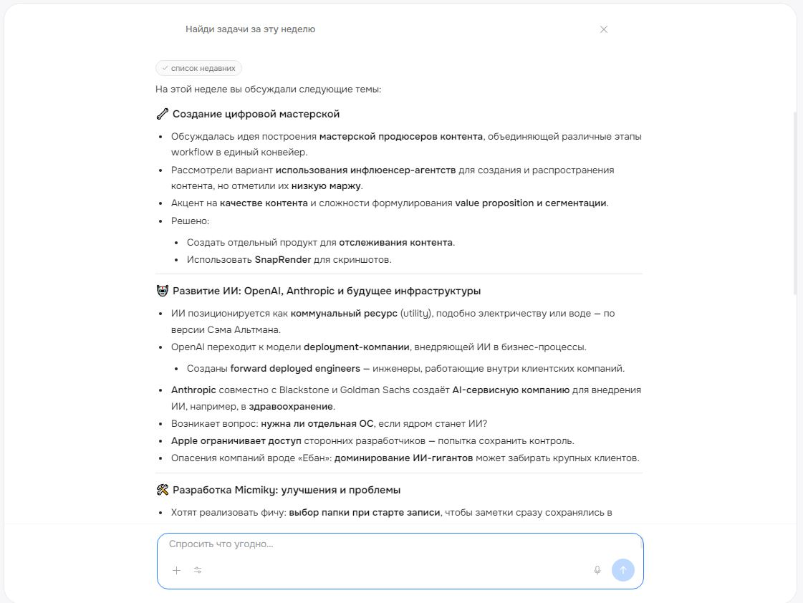
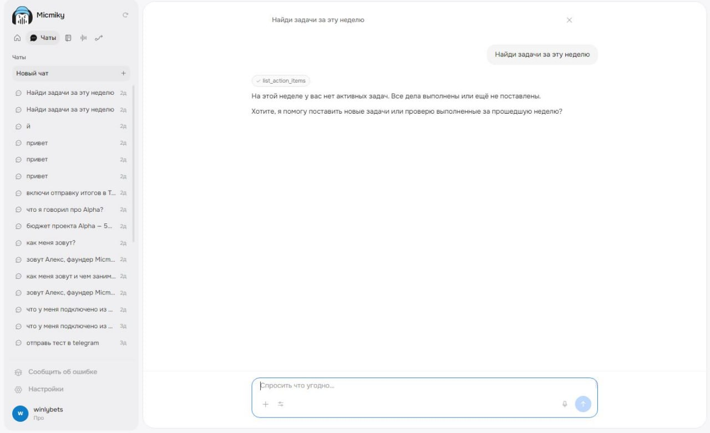
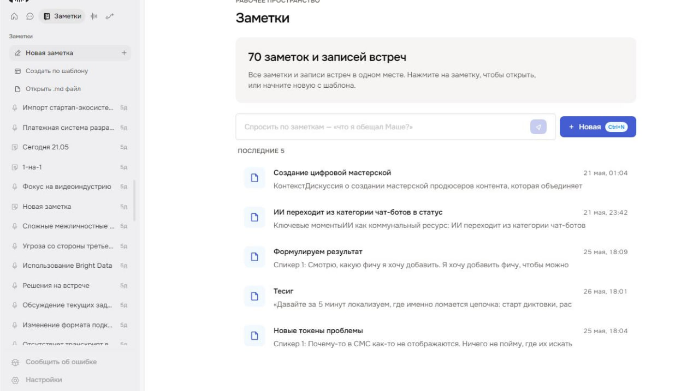

Невидимый помощник продавца. Слышит каждый звонок, помнит каждого клиента, подсказывает прямо во время разговора.
2026·MVP·Основатель и архитектор
50
Тестовых пользователей сейчас
MVP
Текущий этап
2026
Год запуска
3 ОС
Windows, macOS, Linux
Проблема рынка
Все продают «запись встреч с протоколом» · никто не решает реальную боль продавца.
Менеджер провёл созвон. Прежде чем выйти из Zoom, он уже забыл половину деталей: что обещал, на каких условиях, кому что прислать. На следующей встрече с тем же клиентом · начинает с нуля. Сделка тает.
На рынке десятки сервисов транскрипции встреч. Они дают протокол после встречи · когда уже поздно. Никто не помогает продавцу в момент разговора.
Как устроен Micmiky
Невидимый помощник на втором экране.
Записывает системный звук
Не подключается ботом, не виден собеседнику. Работает локально с системным микшером.
Помнит каждого клиента
На повторном звонке узнаёт и подтягивает историю · последние обещания, цены, договорённости.
Подсказывает в реальном времени
Второй экран показывает: о чём договаривались, какие возражения были, что пообещали.
Ставит задачи после
Создаёт карточки в CRM, ставит встречи в календарь, формирует чек-лист «что прислать».
Интерфейс
Как это выглядит.
meet.micmiky.ru

Спросите ассистента · соберёт задачи и итоги по встречам за неделю.
meet.micmiky.ru

История диалогов с памятью о каждом клиенте и встрече.
meet.micmiky.ru

Все заметки и записи встреч · в одном рабочем пространстве.
Сейчас Micmiky в стадии MVP. 50 тестовых пользователей. Платных подписок пока нет · мы дорабатываем продукт по обратной связи. Если хотите попасть в раннюю волну · напишите мне.
Что я понял на этом проекте
Я начал с проблемы, которую увидел на 25 чужих внедрениях ИИ. Везде возвращался один и тот же сценарий: продажник проводит созвон, теряет детали, теряет сделку. И я понял, что это не нужно решать каждый раз индивидуально · это нужно решать продуктом.